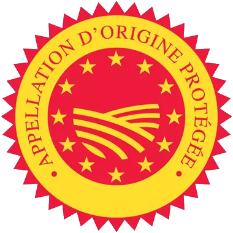
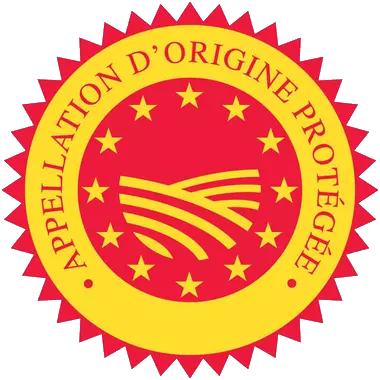
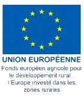
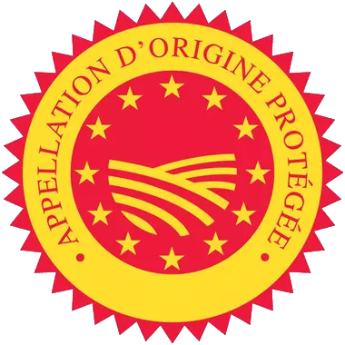
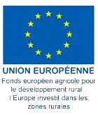
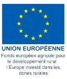
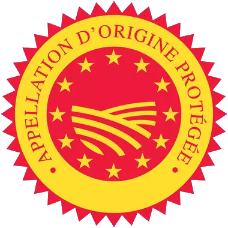
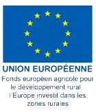

 





Le cidre bio du Pays d'Auge est un véritable trésor gustatif, fabriqué à partir des pommes les plus savoureuses de cette région verdoyante de Normandie. Avec son goût fruité et rafraîchissant, ce cidre offre une expérience gustative unique qui plaira à tous les amateurs de boissons pétillantes et légères. Mais ce qui rend ce cidre encore plus spécial, c'est son processus de fabrication respectueux de l'environnement, sans l'utilisation de pesticides ni d'engrais chimiques. Le cidre bio du Pays d'Auge est donc non seulement délicieux, mais également écologique et durable. Servi bien frais, il accompagnera parfaitement vos apéritifs et vos repas estivaux, ou pourra simplement être apprécié en toute simplicité lors de moments de détente et de convivialité.
Vente uniquement à la ferme